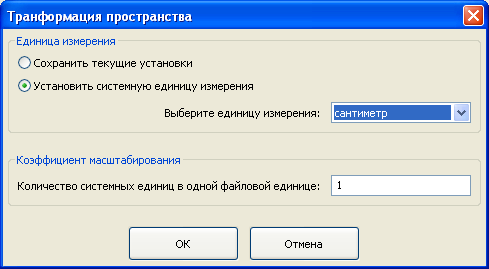
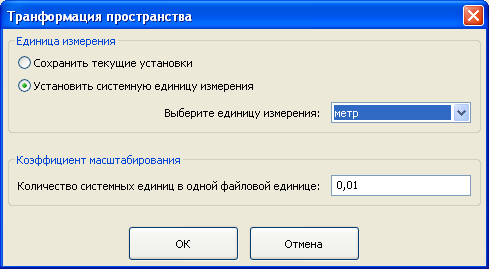

1. Когда вы импортируете файл вы можете установить единицу измерения длины, которую вы хотите использовать для редактирования. Чтобы сделать это, нажмите кнопку "Маштаб" (см. рисунок ниже) и измените системную единицу и масштабный множитель (см. второй рисунок).

Масштабный множитель представляет собой число системных единиц длины в одной файловой единице. В хороших .3ds и .asc -файлах расстояния и координаты записываются в сантиметрах, поэтому файловая единица - это сантиметр. Если вы измените системную единицу, то масштабный множитель будет пересчитан автоматически. Например, если вы хотите редактировать модель в метрах, то установите системную единицу "метр", и масштабный множитель станет равным 0.01 (0.01 - это число метров в одном сантиметре).

2. Когда вы экспортируете файл вы можете установить масштабный множитель, который будет использован для записи файла. Чтобы сделать это, нажмите кнопку "Масштаб" и измените масштабный множитель. Масштабный множитель - это число файловых единиц длины в одной системной единице. Например, если вы измеряете в метрах расстояния при редактировании вашей модели, то вам следует установить масштабный множитель "100" (100 - это число сантиметров ("файловых единиц") в одном метре).